Engineering the path from concept to reality
I am a Mechanical Design Engineer focused on turning complex concepts into high-performance, manufacturable systems. My experience spans robotics, industrial equipment, and advanced prototyping, where I bridge the gap between analysis and real-world implementation.
I combine fundamentals in mechanics, materials, and simulation with hands-on experience in CAD, manufacturing, and system integration. My approach is driven by engineering rigor and fast execution, delivering reliable, production-ready designs from concept to build.
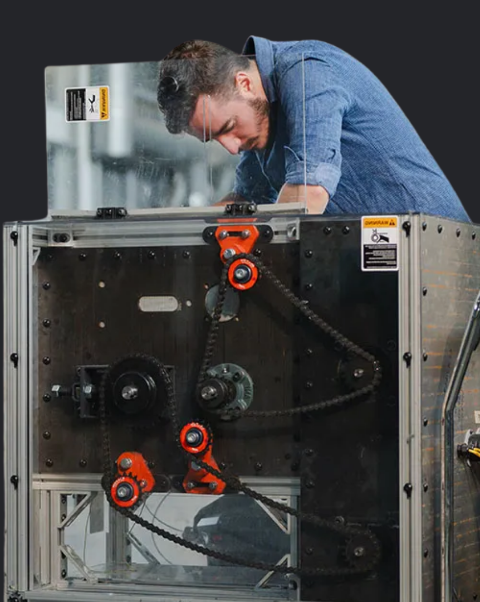
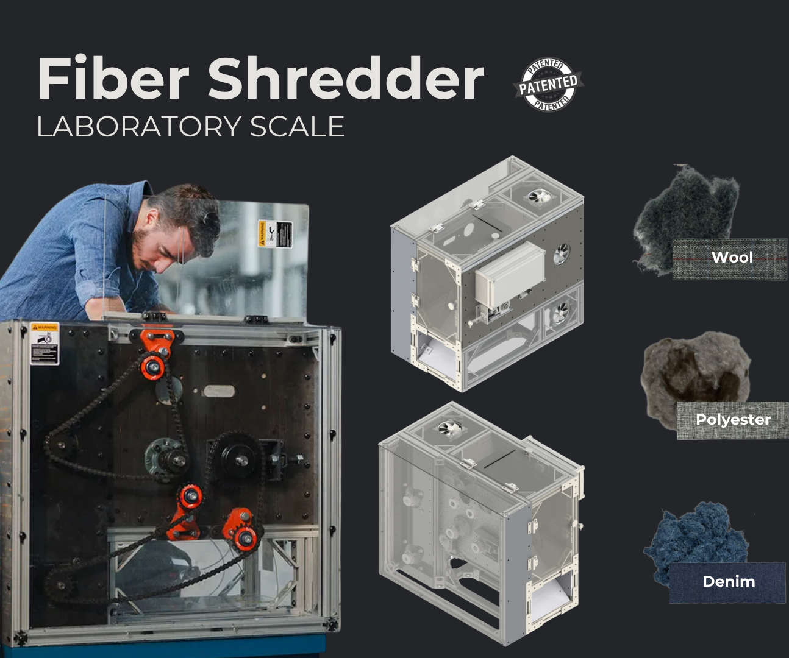
Most textile recycling machines lack control over shear and tensile forces within the shredding zone, leading to inconsistent material breakdown and low fiber recovery. As a result, they produce short fibers or large fabric fragments, limiting material quality and reuse in higher-value applications.
Design a flexible mechanical recycling system capable of deconstructing woven textiles into high-quality fibers. Engineer the shredding mechanism to control failure modes and promote shear-dominant fiber separation. Enable rapid modification of key components to support optimization across different fabrics and operating conditions.
A modular shredding system with a carding-wire drum enabled rapid adaptation of components and operating conditions. Mechanical redesigns improved material flow and promoted shear-dominant failure. These changes increased fiber yield, reduced fabric fragments, and enabled consistent processing across multiple fabrics.
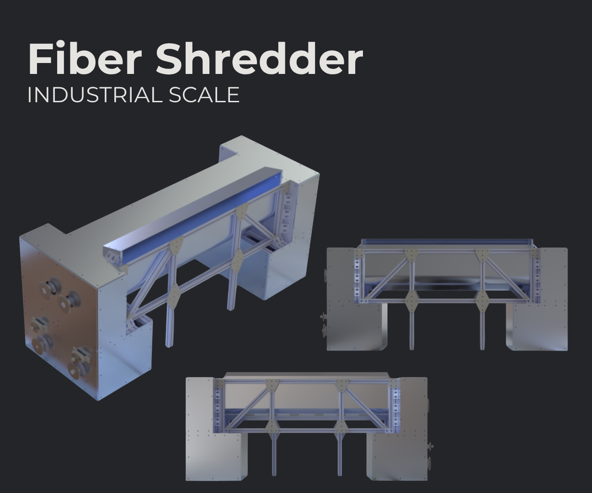
A previously developed lab-scale textile shredding machine was limited to low-throughput batch processing, lacked automated operation, and did not support continuous or controlled material feeding. These limitations constrained processing capacity, system efficiency, and the ability to scale the design to higher-throughput industrial applications.
Transform a lab-scale textile shredding machine into a fully engineered, industrial-scale system capable of high-throughput operation. Redesign the machine for automated operation, continuous feeding, and scalable performance. Develop a parametric, manufacturing-ready design with complete CAD documentation to enable efficient fabrication, assembly, and future resizing.
The machine was redesigned with a parametric CAD architecture, enabling scalable geometry for higher throughput. Components were re-engineered using DFM/DFA with GD&T on critical interfaces and supported by complete documentation. An automated sizing tool enabled rapid re-scaling, with validated subassemblies demonstrating manufacturability and readiness for industrial fabrication.
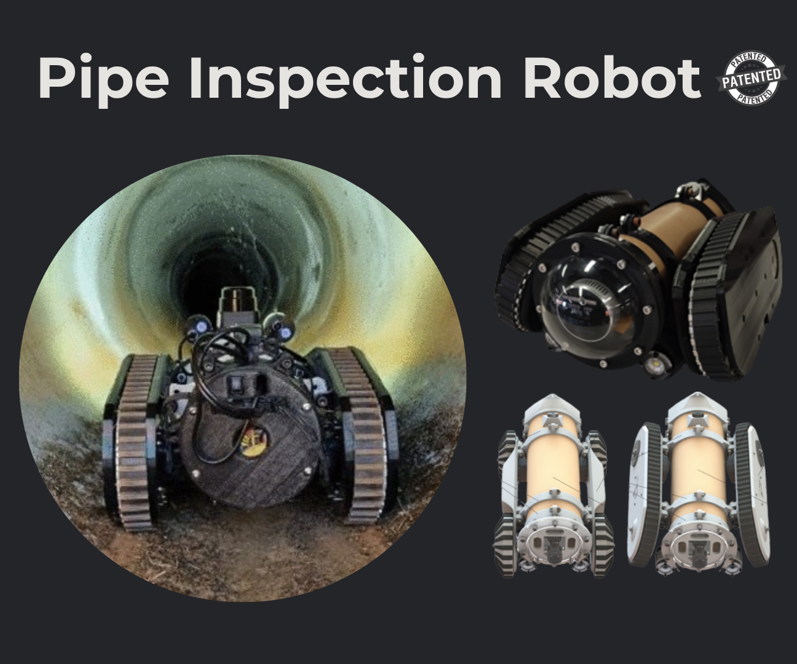
Pipeline systems in mining are prone to clogging, damage, and residue buildup, reducing transport efficiency and requiring frequent inspection. Manual inspection methods are slow, unsafe, and limited in reach, especially in confined or flooded sections. Existing robotic solutions are costly, difficult to adapt to varying pipe diameters, and not optimized for harsh operating environments.
Design and develop a low-cost robotic system capable of inspecting small-diameter pipelines in harsh mining environments. Enable safe operation in confined spaces with adaptability to different pipe diameters through both wheel and caterpillar locomotion systems. Provide a robust and modular platform to support reliable inspection and navigation.
A modular inspection robot with interchangeable wheel and caterpillar systems enabled adaptation to different pipe diameters and terrains. A low-cost, IP67-sealed design with integrated thermal management ensured reliable operation in flooded and dusty environments. The system supported both teleoperated and autonomous inspection at significantly lower cost than commercial solutions.
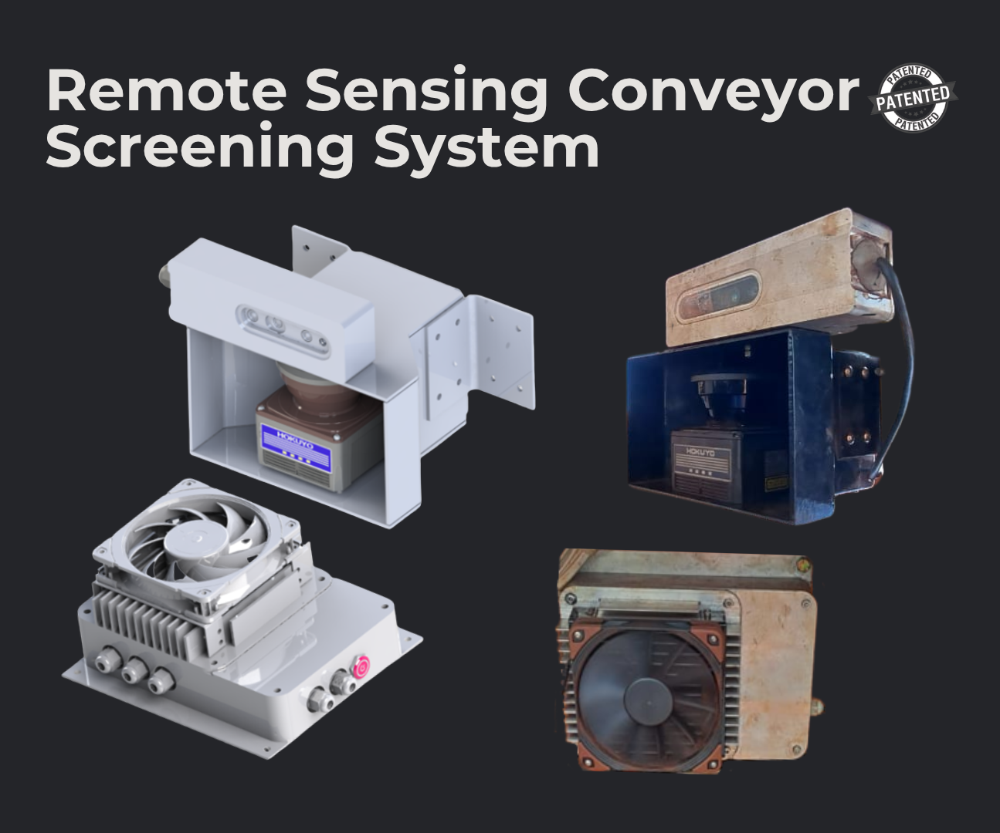
Manual screening evaluation required workers to operate near large vibrating machinery, creating significant safety risks. At the same time, harsh conditions such as dust, moisture, and vibration made it difficult to reliably mount and protect sensing equipment. This created a need for a robust mechanical solution to enable safe and stable sensor deployment on conveyors.
Design and develop a robust mechanical system to deploy a LiDAR-based screening solution in harsh mining environments. Ensure stable sensor positioning and reliable operation under continuous vibration, dust, moisture, and outdoor exposure. Enable safe, non-intrusive installation on conveyor systems while maintaining precise alignment and consistent data acquisition.
A rugged LiDAR mounting system with an IP67-sealed enclosure and integrated thermal management ensured reliable operation in dusty, wet, and high-vibration environments. Adjustable mounts maintained precise alignment and consistent scanning under mechanical disturbances. The system eliminated manual installations near hazardous machinery while enabling stable, repeatable data collection.
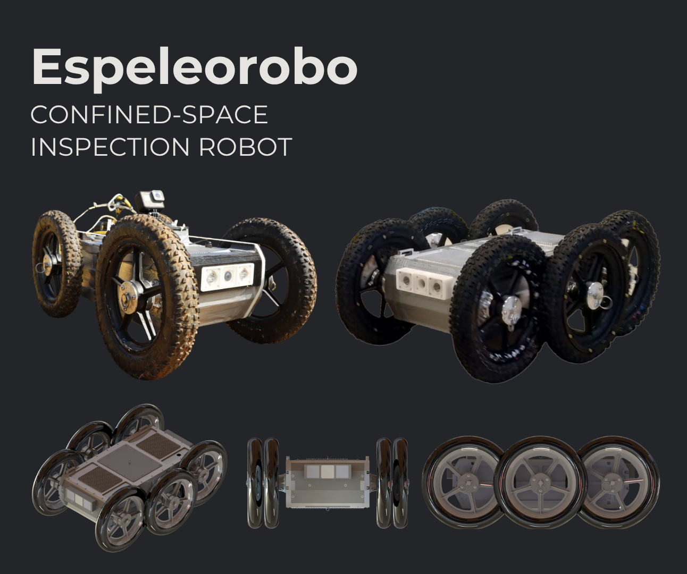
Confined environments such as caves, dam galleries, and drainage ducts present uneven terrain, debris, humidity, and tight passages that make human inspection hazardous or unfeasible. Traditional methods require personnel to enter these areas, exposing them to risks such as structural collapse, toxic gases, and difficult rescue conditions. This creates a need for a compact, stable, and highly maneuverable robotic platform for safe inspection.
Design and develop a compact, modular inspection robot capable of navigating narrow, irregular, and low-visibility confined environments. Enable terrain adaptability through interchangeable locomotion systems while maintaining structural robustness and onboard sensing. Provide a flexible platform for safe, remote inspection in hazardous conditions.
The robot successfully navigated caves, dam galleries, and other confined environments, demonstrating stable mobility over uneven terrain. Its modular locomotion and structure enabled adaptation to different obstacles while maintaining reliable operation in low-visibility conditions. The system improved inspection safety by eliminating the need for human entry into hazardous spaces.
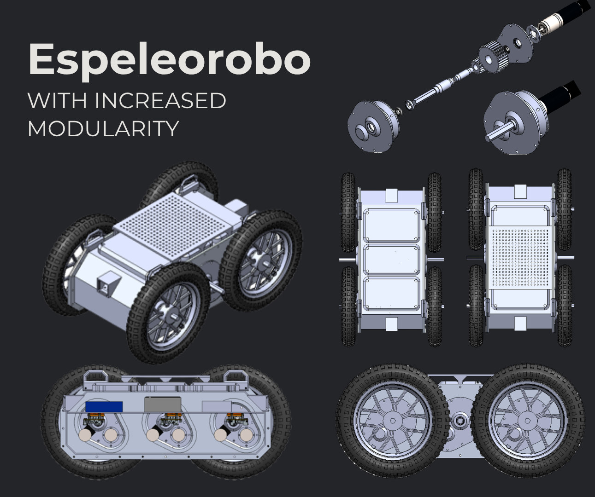
Inspection robots for confined environments often use integrated drive systems that increase mechanical complexity and make maintenance inefficient. In previous EspeleoRobo versions, components were tightly coupled, requiring full disassembly for repairs or upgrades. This resulted in increased downtime and limited adaptability during field operations.
Develop a modular EspeleoRobo architecture with independent motorized wheel modules to enable rapid maintenance and component replacement. Simplify the mechanical structure to reduce complexity while improving accessibility to internal systems. Provide a flexible platform for easy integration of sensors, electronics, and external instrumentation.
The robot was redesigned with independent motor–transmission modules per wheel, enabling quick replacement without full disassembly. A modular chassis with accessible compartments simplified integration and reduced complexity. The new architecture improved serviceability, reduced downtime, and enabled rapid reconfiguration.
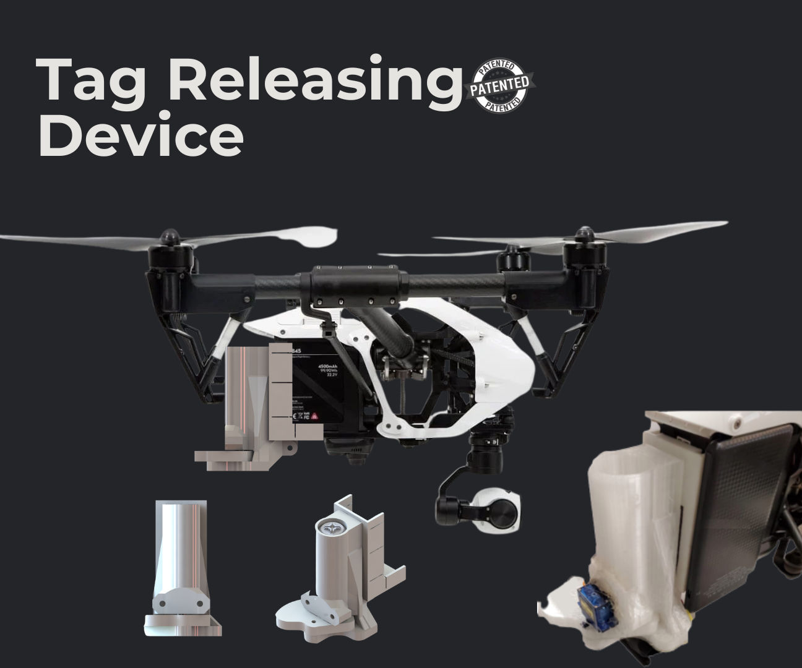
RFID tags embedded in ore blocks prior to detonation exhibited high failure rates, with 75–80% being destroyed during blasting due to extreme mechanical and shock loading. A post-detonation manual placement method required workers to enter unstable blasted zones, exposing them to significant safety risks. Following multiple accidents, a safer and more reliable deployment approach was required.
Design and develop a drone-based deployment system capable of safely distributing RFID tags over blasted areas. Ensure controlled, reliable release of tags without compromising flight stability or tag integrity. Enable accurate tag placement while eliminating the need for worker entry into hazardous zones.
A drone-mounted deployment mechanism with a snap-fit interface and capacity for up to ten RFID tags enabled secure storage and controlled release during flight. A mass-balanced design minimized aerodynamic disturbance, ensuring stable operation and precise placement. The system reliably deployed intact tags, enabled effective mineral tracking, eliminated worker exposure to hazardous areas, and resulted in a patented solution.
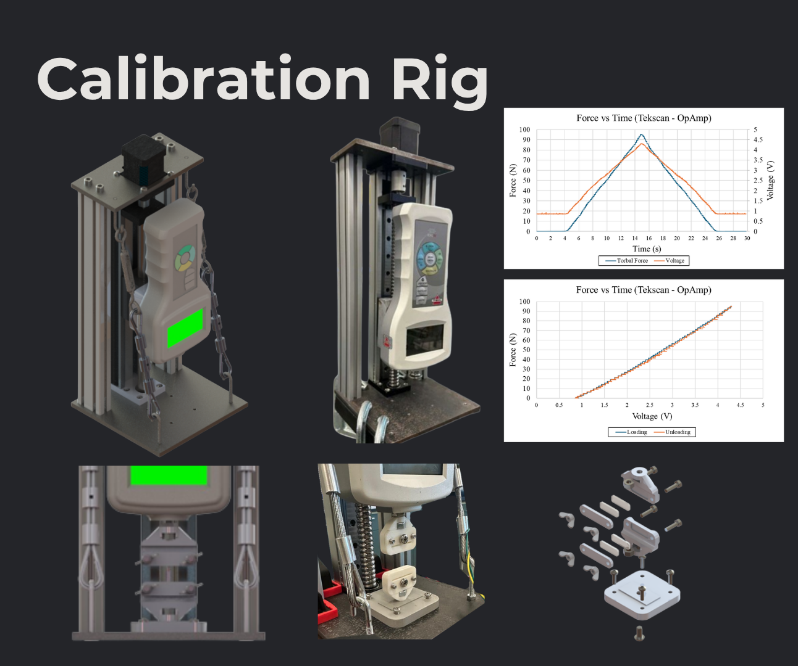
Testing soft and flexible sensors typically relies on expensive, specialized equipment that is not accessible for rapid prototyping or iterative research. These systems also lack flexibility for custom testing routines, especially for low-force, high-resolution measurements. As a result, there is a need for a low-cost, adaptable testing platform that enables precise and repeatable sensor characterization.
Design and build a modular, low-cost electromechanical testing machine for characterizing force and strain sensors. Enable both force-controlled and position-controlled testing within a single platform. Provide a flexible and reliable system to support rapid sensor development and evaluation.
A modular testing platform was developed with a rigid frame, reconfigurable fixtures, and integrated actuation, load sensing, and position control. It enabled force- and displacement-controlled testing with high sensitivity across different sensor types. The system produced consistent results in drift, hysteresis, and repeatability tests, achieving near lab-grade performance at low cost.
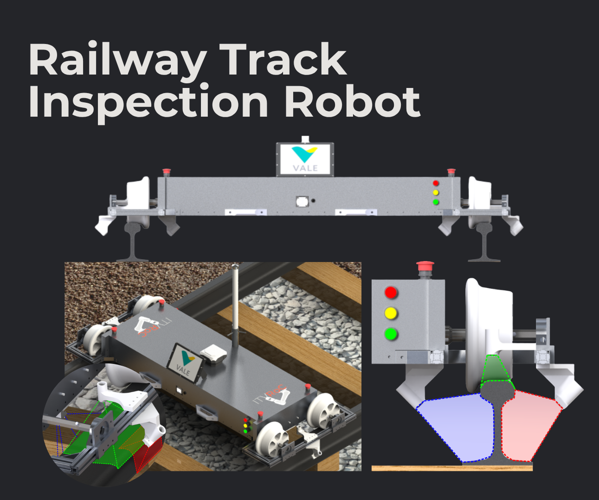
Railway tracks in ZAS (Zona de AutoSalvamento) require continuous inspection in high-risk environments such as potential barrage failure. Access is restricted, and manual inspection is often prohibited. Conventional methods are limited under confined and hazardous conditions. This necessitates a remotely operated or autonomous platform capable of reliable, high-coverage inspection without exposing workers to risk.f reliable, high-coverage inspection without exposing workers to risk.
Design and develop a lightweight, modular rail-inspection platform capable of supporting multiple cameras and lighting systems for continuous defect detection. Enable full coverage of rail surfaces while allowing easy assembly, reconfiguration, and expansion for additional sensors. Provide a scalable mechanical system suitable for remote inspection in constrained mining environments.
A modular testing platform was developed with a rigid frame, reconfigurable fixtures, and integrated actuation, load sensing, and position control. It enabled force- and displacement-controlled testing with high sensitivity across different sensor types. The system produced consistent results in drift, hysteresis, and repeatability tests, achieving near lab-grade performance at low cost.
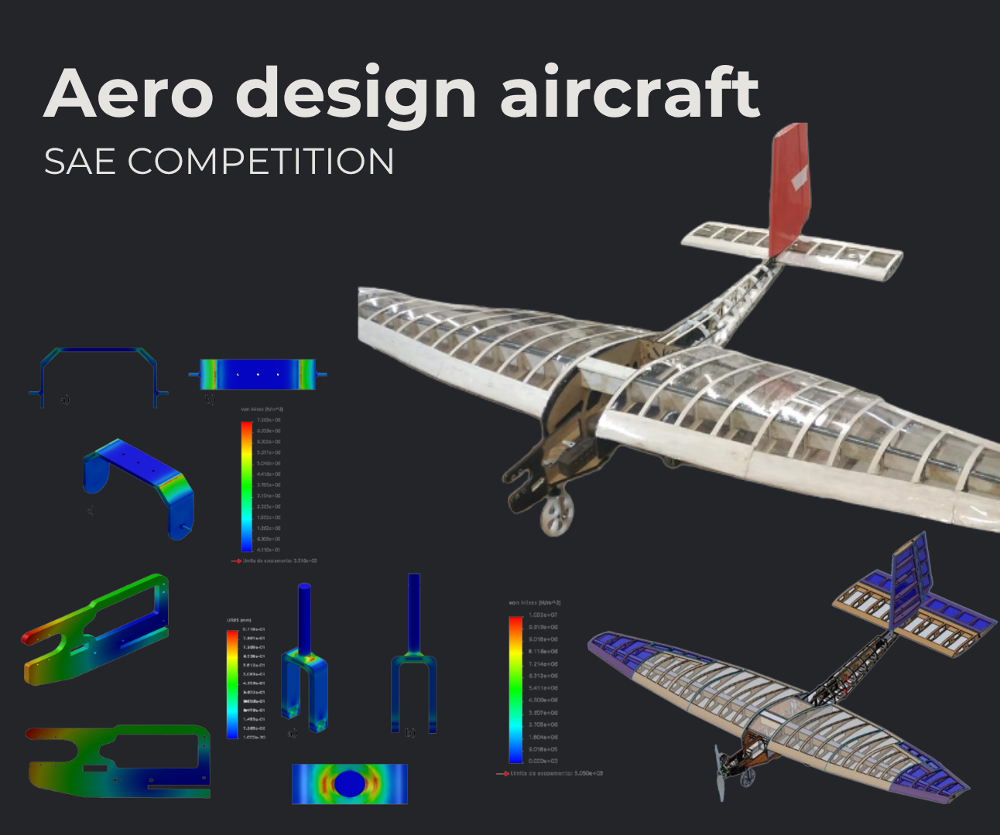
The previous aircraft required a structural design capable of maximizing payload while maintaining stability and control under competition constraints. This introduced a trade-off between minimizing weight and ensuring sufficient strength to withstand aerodynamic loads, landing impacts, and tail forces. A lightweight, manufacturable airframe was needed to balance structural integrity, mass distribution, and flight performance.
Design and optimize the airframe, including wing, fuselage, landing gear, and tail, to improve payload capacity while maintaining stability and control. Ensure proper center-of-gravity range and sufficient control authority through geometry and mass distribution. Develop a lightweight, structurally efficient design compatible with available materials and manufacturing methods.
The airframe incorporated a cavern-conical tail to improve weight distribution and simplify construction. Structural elements were sized through load analysis using lightweight materials to minimize mass while maintaining strength. The final design met stability and structural requirements, providing adequate control authority.
I create engineering technical reports that translate complex analyses into clear, actionable design decisions. By combining analytical calculations, automated tools, and visual outputs such as stress, displacement, and load diagrams, I ensure accuracy and traceability. My structured approach enables fast validation and confident application to real world mechanical systems.
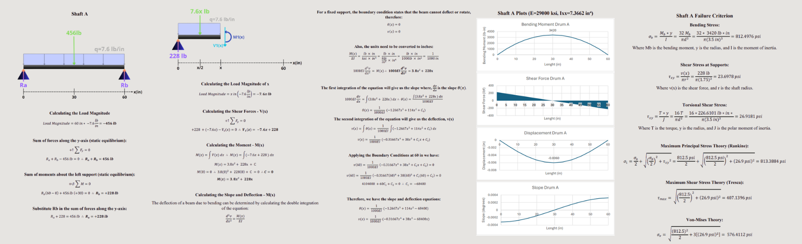
I build dynamic spreadsheets that execute and validate mechanical design calculations with speed and precision. From stress and strain analysis to force modeling and tolerance stack-ups, these tools enable rapid iteration and reliable, design-ready results.
I develop dynamic spreadsheets that turn raw data into actionable engineering insights. Through parameter sweeps, structured datasets, and clear visualizations, I drive fast evaluation of performance, trends, and design trade-offs.
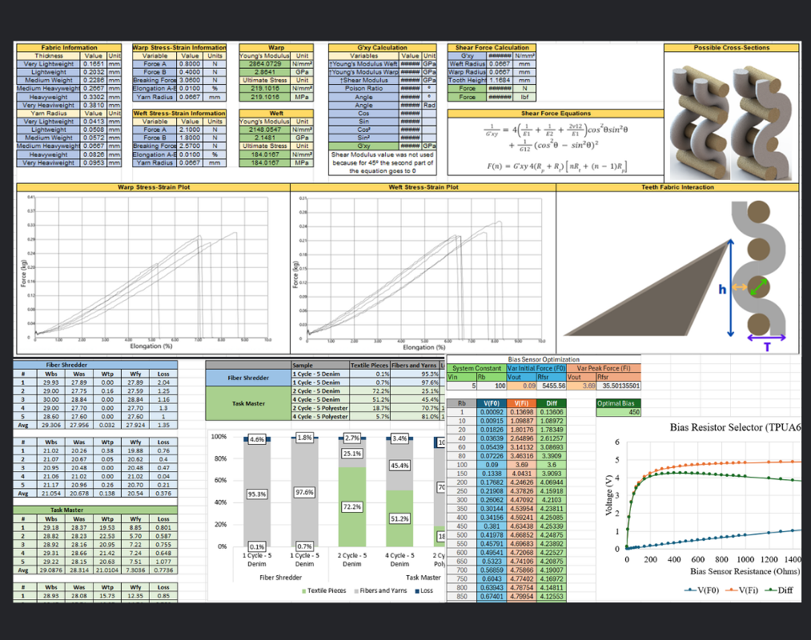
I leverage advanced simulations to predict failure, optimize performance, and eliminate design uncertainty before fabrication. My work includes stress-strain analysis, large deformation modeling, and hyperelastic material simulation for soft and compliant systems. I apply topology optimization to aggressively reduce weight while maintaining structural integrity, using simulation results to drive fast, confident, and production-ready design decisions.
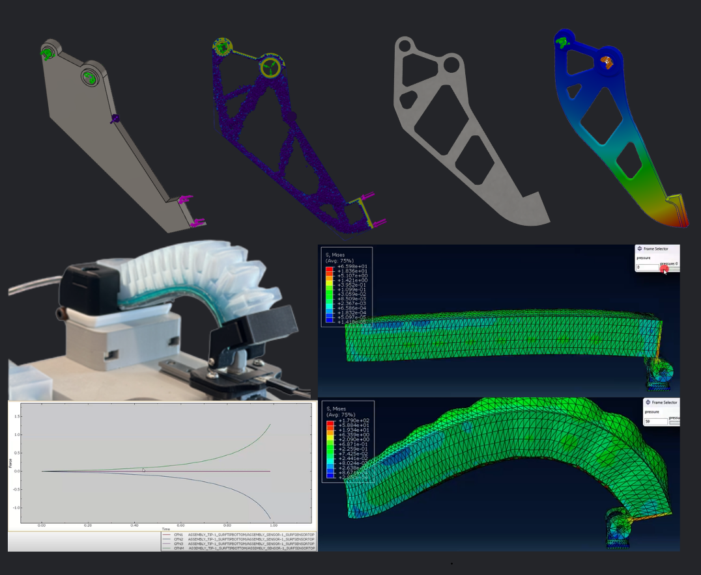
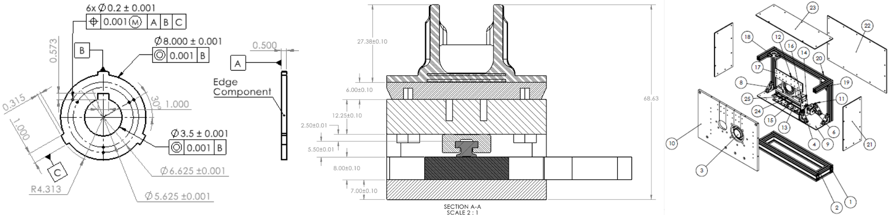
I develop standardized, production-ready engineering drawings that ensure accuracy, consistency, and manufacturability. My work includes GD&T drawings in accordance with ASME Y14.5, tolerance stack-up analyses, detailed part drawings, and full assembly drawings. By clearly defining dimensions, tolerances, and functional requirements, I enable reliable manufacturing, inspection, and assembly, ensuring designs perform as intended in real-world applications.
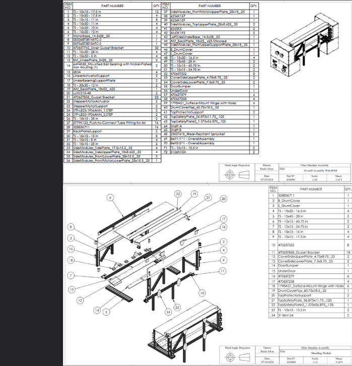
I develop CAD-driven Bills of Materials fully integrated with dynamic Excel spreadsheets to create a centralized and efficient sourcing workflow. Each BOM links directly to supplier quotes, websites, CAD models, and mechanical drawings, enabling fast access to critical information during design and procurement. This approach improves traceability, reduces sourcing time, and ensures consistency between design and manufacturing. By structuring and automating BOM data, I streamline the transition from concept to production and support accurate, scalable system builds.
BR 102021018519-8 A2
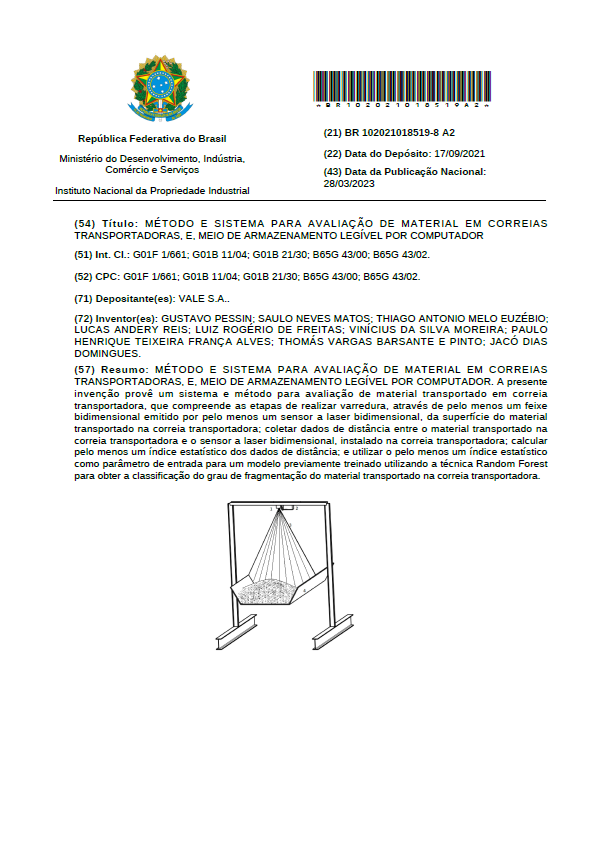
BR 102021010685-9 A2
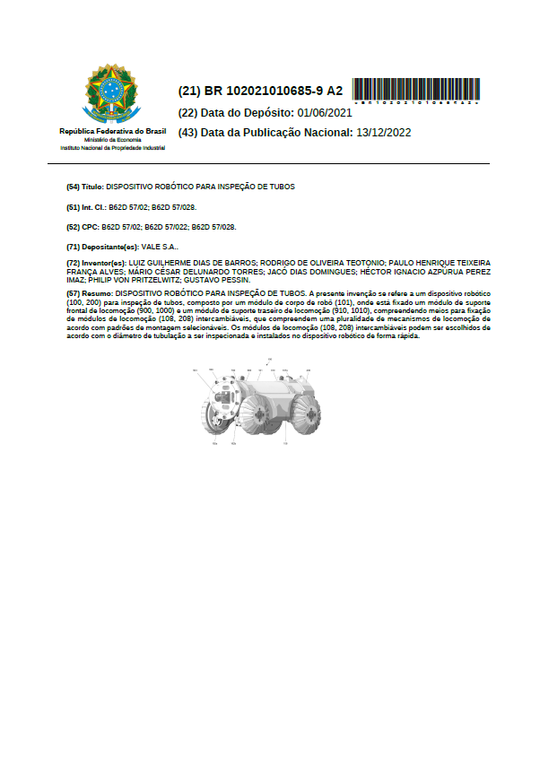
BR 102021005143-4 A2
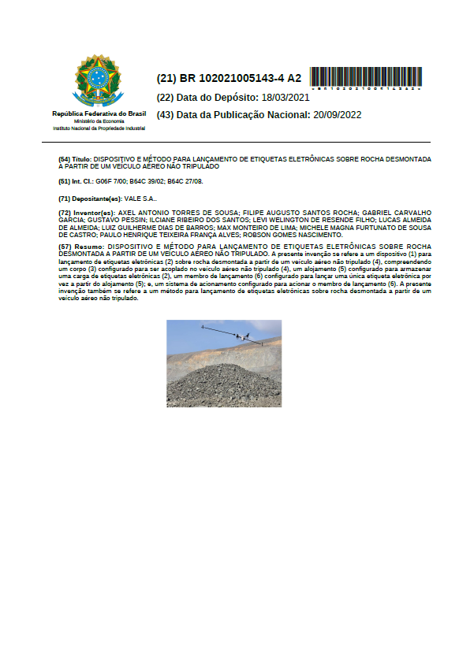
WO 2024/243033 A1
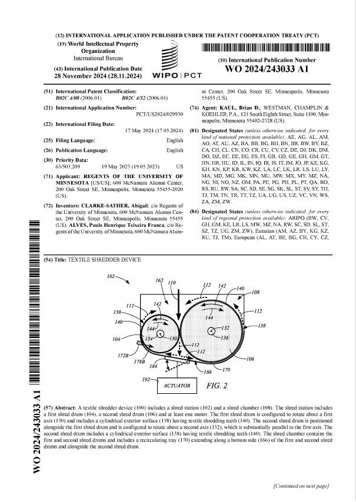
“I'd recommend him for any design problem you need to fix and build - any team you need to lead - any colleague who needs help learning new concepts - and any concept you need to make reality.”
“Paulo is an incredibly hard worker and creative problem solver and is one of the top graduate students I've had the pleasure with whom to interact and work.”
“Beyond his expertise as an engineer, Mr. Alves also possesses strong leadership skills and has established himself as a thought leader on our research team and within the discipline of mechanical and industrial engineering.”
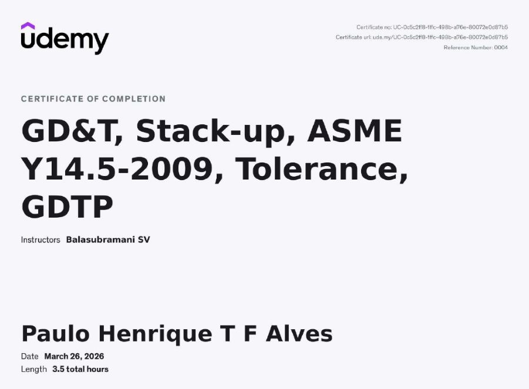
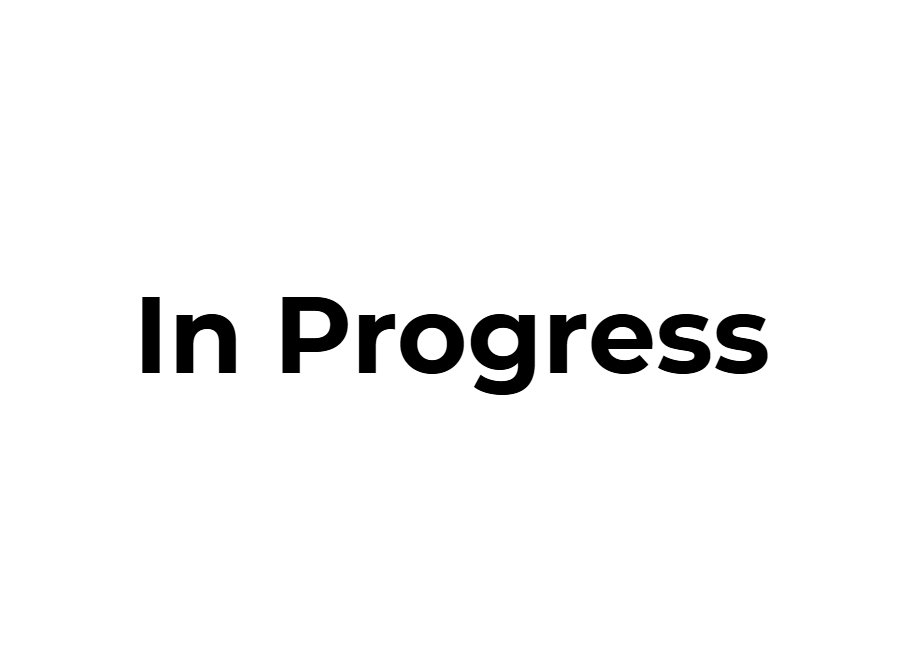
Massoud, M. M., P. H. T. F. Alves, and J. Libby. “Enhancing Dual-Loop Pressure Control in Pneumatic Soft Robotics With a Comparison of Evolutionary Algorithms for PID & FOPID Controller Tuning.” IEEE Robotics and Automation Letters 10, no. 6 (2025): 6119–6126. https://doi.org/10.1109/LRA.2025.3563163.
Teixeira Franca Alves, P. H., G. Bahr, A. R. Clarke-Sather, and M. A. Maurer-Jones. “Combining Flexible and Sustainable Design Principles for Evaluating Designs: Textile Recycling Application.” Journal of Manufacturing Science and Engineering 146, no. 2 (2024): 020903. https://doi.org/10.1115/1.4063993.
Durrani, H., A. R. Clarke-Sather, and P. H. T. F. Alves. “Prospective Life Cycle Assessment of Nonwoven Mat Manufacturing: Comparing Pre-Consumer Wood Waste Fibers to Post-Consumer Recycled Apparel Fibers.” In Proceedings of the ASME 2024 International Design Engineering Technical Conferences and Computers and Information in Engineering Conference. Washington, DC, USA, 2024. https://doi.org/10.1115/DETC2024-143955.
Teixeira França Alves, P. H., A. Clarke-Sather, S. Carlson, and A. Martini. “Theoretical Method for Characterizing Textile Failure Mechanics in Mechanical Recycling With Carded Drums.” In Proceedings of the ASME 2023 18th International Manufacturing Science and Engineering Conference. New Brunswick, New Jersey, USA, 2023. https://doi.org/10.1115/MSEC2023-104361.
Carlson, S., A. K. Martini, A. R. Clarke-Sather, and P. H. Alves. “Theoretical Piezoelectric Energy Generation From Thoracic Expansion During Respiration for Smart Wearables.” In Proceedings of the ASME 2023 International Design Engineering Technical Conferences and Computers and Information in Engineering Conference. Boston, Massachusetts, USA, 2023. https://doi.org/10.1115/DETC2023-116562.
de Barros, L. G. D., R. Teotônio, P. Alves, M. C. D. Torres, J. Domingues, H. Azpúrua, G. Freitas, and G. Pessin. “A Robotic Device for Inspecting Small Diameter Pipes.” In Proceedings of the 26th International Congress of Mechanical Engineering, 2021.
Matos, Saulo N., T. V. Pinto, Vinicius S. Moreira, Tiago A. Moraes, P. H. Alves, Gustavo Pessin, and T. A. Euzebio. “Estratégia de avaliaçao da eficiência do processo de peneiramento utilizando sensoriamento remoto.” Simpósio Brasileiro de Automaçao Inteligente-SBAI 1 (2021).
Araújo, Álvaro Rodrigues, Gilmar PC Júnior, David Simon Marques, Victor RF Miranda, Adriano MC Rezende, Paulo HTF Alves, Héctor Azpúrua, Gustavo Pessin, and Gustavo Freitas. “Comando de direção de Antenas de Rádio para Teleoperação de Robô Móvel.” Escola de Engenharia, Universidade Federal de Minas Gerais, 2021.
Cid, A., et al. “A Simulated Environment for the Development and Validation of an Inspection Robot for Confined Spaces.” In 2020 Latin American Robotics Symposium (LARS), 2020 Brazilian Symposium on Robotics (SBR) and 2020 Workshop on Robotics in Education (WRE), 1–6. Natal, Brazil, 2020. https://doi.org/10.1109/LARS/SBR/WRE51543.2020.9307007.
Alves, Paulo HTF. Textile Mechanical Recycling: Design, Improvement, and Analysis of a Carding Wire Drum System. Master’s thesis, University of Minnesota, 2023.
Alves, Paulo Henrique Teixeira França. Influência do padrão e densidade de preenchimento na resistência mecânica de amostras fabricadas em PETG via deposição de material fundido. 2022.